영하나 1차 프로젝트 튜토리얼
목차
이 튜토리얼의 목표는 화려한 개발 도구를 익히는 것이 아니라, LLM에게 원하는 결과를 지시하고 결과를 확인하며 고쳐 나가는 흐름을 익히는 것입니다.
이번 1차 프로젝트는 개인 웹 페이지를 만드는 과제이고, 차기 팀 프로젝트(2차 프로젝트)에서 팀원 구성에도 참고될 수 있습니다.
튜토리얼 목차
Section 1. 프로젝트 소개
Section 1
1.1 프로젝트 개요
이번 1차 프로젝트의 산출물은 자신을 소개하는 웹 페이지입니다.
이름, 대회/동아리 활동 경험, 공부 경험, 보유 스킬/자격증, 관심사, 경험, SNS 링크 등을 한 페이지에 담아 자기소개처럼 보여주면 됩니다.
중요한 것은 완벽한 디자인이 아니라, 내가 원하는 내용을 LLM에게 전달하고 결과를 확인하면서 페이지를 완성하는 과정을 경험하는 것입니다.
즉, 이번 과제는 "웹 개발 수업"이면서도 동시에 "LLM을 활용해 결과물을 만드는 연습"입니다. HTML 문법을 전부 외우는 것이 목표가 아니라, 어떤 정보를 넣고 싶은지 정리하고, 그것을 모델이 이해할 수 있게 설명하는 힘을 기르는 것이 더 중요합니다.
1.2 이 프로젝트의 목적
- 코딩 지식을 많이 외우기보다, LLM에게 정확하게 지시하는 연습을 하기 위함입니다.
- 생성된 결과를 확인하고 다시 고치는 흐름을 익히기 위함입니다.
- 완성보다 반복 개선 과정을 경험하는 것이 더 중요합니다.
예를 들어 "예쁜 페이지 만들어줘"처럼 막연하게 요청하면 결과도 애매하게 나옵니다. 반대로 "이름, 관심사 3개, 동아리 경험, GitHub 링크를 넣고 모바일에서도 깨지지 않게 해줘"처럼 말하면 결과가 훨씬 좋아집니다.
이번 프로젝트를 통해 익혀야 하는 것은 크게 세 가지입니다.
1.3 차기 팀 프로젝트(2차, 3차 프로젝트)와의 연결
이번 1차 프로젝트는 단순한 개인 과제로 끝나지 않습니다. 이후 진행될 2차 팀 프로젝트에서 팀원 구성과 협업 준비를 볼 때도 참고가 될 수 있습니다.
즉, 결과물 자체보다도 어떻게 만들었는지, 얼마나 스스로 반복 개선했는지가 의미 있는 자료가 됩니다.
예를 들어 아래 같은 모습은 이후 팀 프로젝트에서도 좋은 신호가 됩니다.
- 한 번 생성한 결과에 만족하지 않고 스스로 여러 번 수정을 통해 학습
- 정보를 읽기 쉽게 정리하려는 태도
- LLM을 맹목적으로 복붙하지 않고 결과를 확인하면서 학습
반대로 기능이 많아 보여도, 링크가 깨져 있거나 내용이 비어 있거나 설명이 어색하면 완성도가 낮게 보일 수 있습니다.
1.4 개발 과정 요약
이번 프로젝트의 기본 흐름은 매우 단순합니다. 학생이 직접 코드를 처음부터 끝까지 짜는 방식이 아니라, 파일을 만들고, LLM과 대화하면서 내용을 채우고, 브라우저로 확인하는 방식입니다.
- 빈
.html파일을 하나 만듭니다. - ChatGPT, Gemini, Claude 중 하나에 페이지 요구사항을 적습니다.
- 생성된 전체 HTML 코드를 파일에 그대로 붙여넣습니다.
- Chrome에서 파일을 열어 결과를 확인합니다.
- 마음에 안 드는 부분을 다시 LLM에게 수정 요청합니다.
- 수정된 전체 코드를 다시 붙여넣고 반복합니다.
이 흐름에서 중요한 점은 매 단계마다 반드시 확인이 들어간다는 것입니다. 붙여넣고 끝이 아니라, 실제로 열어 보고, 이상한 부분을 찾고, 다시 요청하는 과정이 핵심입니다.
1.5 산출물 예시
완성 결과는 아래처럼 "나를 소개하는 한 페이지" 느낌이면 충분합니다.
예시 결과물
홍길동
사용자 경험과 AI 활용에 관심이 있는 학생입니다. 이번 페이지에서는 저의 관심사와 경험을 간단하게 소개합니다.
- 관심사: 웹 개발, UX, AI
- 경험: 동아리 운영, 해커톤 참여, 프론트엔드 공부
- 링크: Instagram, GitHub, 블로그
핵심은 화려함보다 읽히는 구조입니다.
Section 2. 페이지 구성 요소
Section 2
LLM에게 페이지를 만들어 달라고 할 때는 막연하게 "자기소개 페이지 만들어줘"라고 하기보다, 들어갈 요소를 미리 정리해서 전달하는 편이 훨씬 좋습니다.
이 섹션은 "무엇을 넣을까?"를 정리하는 단계입니다. 여기에서 재료를 잘 정리해 두면 다음 튜토리얼 단계에서 프롬프트를 쓰기가 매우 쉬워집니다.
2.1 관심사
페이지에는 "내가 무엇에 흥미를 느끼는 사람인지"가 드러나면 좋습니다. 너무 거창하지 않아도 되고, 지금 배우는 것만 적어도 충분합니다.
- 예시: 웹 개발, 디자인, 데이터 분석, AI 활용, 앱 서비스 기획
- 예시: 프론트엔드 공부, 해커톤, 글쓰기, 영상 편집
관심사는 보통 3~5개 정도가 가장 적당합니다. 너무 적으면 심심해 보이고, 너무 많으면 핵심이 흐려집니다.
한 단어만 적어도 되지만, 가능하면 짧은 설명을 붙이면 더 좋습니다.
- 웹 개발: 사용자에게 보이는 화면을 만드는 데 관심이 있음
- AI 활용: 공부와 프로젝트에 AI를 어떻게 적용할 수 있을지 탐색 중
- 디자인: 읽기 쉬운 화면과 구조를 만드는 것에 흥미가 있음
2.2 개인 이력
지금까지 했던 활동이나 경험을 간단히 정리하면 페이지가 훨씬 구체적으로 보입니다.
- 동아리 활동 경험: 참여한 세션, 맡았던 역할
- 대회 출전 경험: 해커톤, 공모전, 교내 대회, 발표 경험
- 공부 경험: 독학한 기술, 들은 강의, 만든 미니 프로젝트
- 스킬 / 자격증: 사용 가능한 언어, Tool, 취득 자격증
이력은 길게 서술하지 않아도 괜찮습니다. 아래처럼 한 줄 항목으로 적어도 충분히 전달됩니다.
- 2024 영하나 스터디 참여
- 교내 해커톤 참가
- HTML/CSS 독학 중
- Python 기초 문법 학습 완료
- 정보처리기사 준비 중특히 개인 이력은 "내가 무엇을 해봤는지"가 보이게 쓰는 것이 중요합니다. 아직 큰 성과가 없더라도 아래 항목들은 전부 의미 있는 재료입니다.
- 처음부터 끝까지 완성한 작은 프로젝트
- 학습 중인 기술이나 수강 중인 강의
- 발표, 팀플, 운영, 기록 정리 경험
- 대회 출전, 수상 여부와 상관없는 참여 경험
2.3 SNS, 블로그 링크
마지막에는 나를 더 보여줄 수 있는 외부 링크를 넣으면 좋습니다. Instagram, GitHub, 블로그, Notion 같은 링크가 대표적입니다.
링크는 많다고 좋은 것이 아니라, 실제로 눌렀을 때 의미 있는 곳으로 연결되는 것이 중요합니다.
- Instagram: 일상 계정보다 활동 기록용 계정이면 더 적합할 수 있음
- GitHub: 코드 저장소나 프로필 소개용
- 블로그: 공부 기록, 회고, 프로젝트 정리
- Notion: 포트폴리오, 기록 정리, 링크 모음
아래처럼 먼저 내용을 메모해 두면 LLM에게 요청하기가 쉬워집니다.
이름: 홍길동
한 줄 소개: 사용자 친화적인 서비스를 만들고 싶은 학생
관심사:
- 웹 프론트엔드
- AI 활용
- UX 글쓰기
개인 이력:
- 2024 동아리 스터디 참여
- 교내 해커톤 참가
- HTML/CSS 독학 중
스킬 / 자격증:
- Python 기초
- HTML/CSS 기초
- SQLD 준비 중
링크:
- Instagram
- GitHub
- 블로그이 메모는 완성본이 아니라 LLM에게 전달할 재료 목록입니다. 문장이 어색해도 괜찮고, 키워드만 있어도 충분합니다.
Section 3. 튜토리얼
Section 3
이제 실제로 파일을 만들고, LLM으로 내용을 작성하고, 브라우저로 확인한 뒤, 수정 요청까지 반복하는 흐름을 따라가면 됩니다.
이번 섹션은 "설명"이 아니라 실제 작업 순서에 가깝습니다. 가능하면 읽기만 하지 말고, 바로 따라하면서 진행하는 것이 좋습니다.
3.1 step 1. .html 파일 생성하기
HTML 파일은 일반 텍스트 파일과 똑같이 생겼지만, 확장자가 .html로 끝나는 파일입니다. 브라우저는 이 확장자를 보고 "웹페이지로 열어야겠다"고 판단합니다. 이 단계에서는 그 파일을 직접 만들고, 메모장으로 열 준비를 합니다.
① 새 텍스트 파일 만들기
- 바탕화면의 빈 곳, 또는 작업할 폴더 안의 빈 곳에서 마우스 오른쪽 버튼을 클릭합니다.
- 메뉴에서 새로 만들기를 선택합니다.
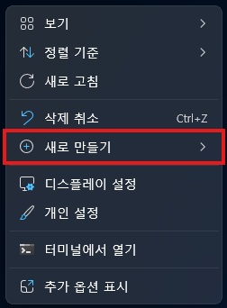
- 하위 메뉴에서 텍스트 문서를 클릭합니다.
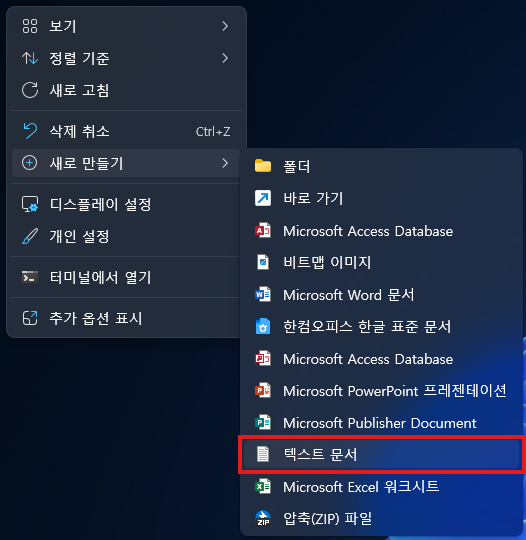
새 텍스트 문서.txt라는 이름의 파일이 생성됩니다. 아직 이름을 수정하지 마세요.
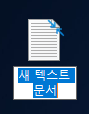
my-page처럼 이름 붙인 폴더를 하나 만들고 그 안에서 시작하면 나중에 파일을 찾기 쉽습니다.
② 파일 확장명 보이게 설정하기
Windows는 기본적으로 파일 확장자(.txt, .html 등)를 숨겨서 보여줍니다. 이름을 바꿀 때 실수를 막으려면 먼저 확장자가 보이도록 설정을 바꿔야 합니다.
- 파일 탐색기를 엽니다. (바탕화면에서 작업 중이라면 바탕화면 파일을 그냥 우클릭해도 됩니다.)
- 탐색기 상단 메뉴에서 보기를 클릭합니다.
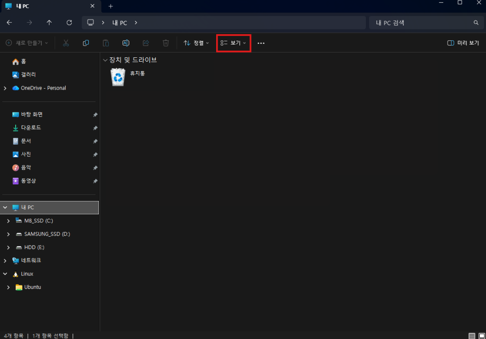
- 표시를 클릭합니다.
- 파일 확장명 항목을 클릭해 체크합니다.
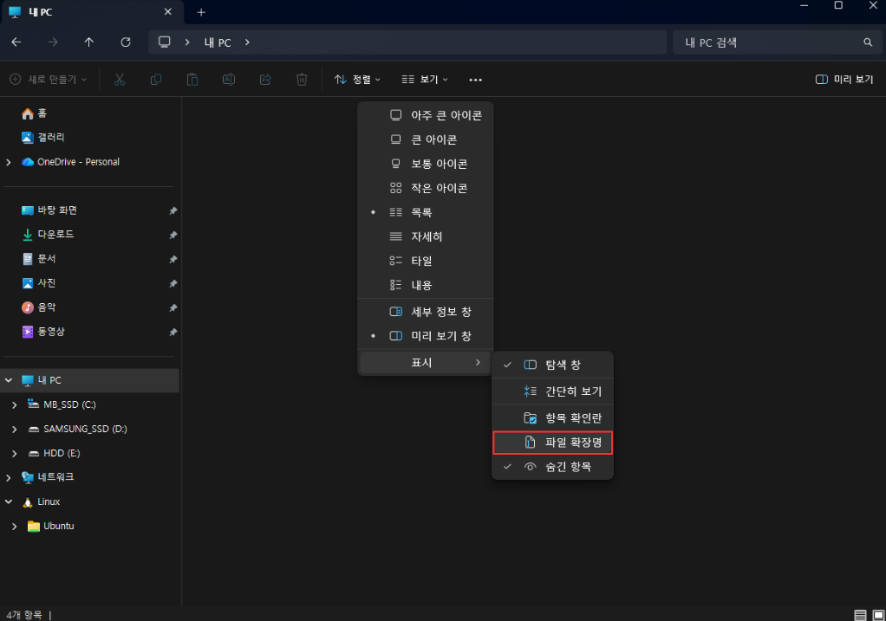
- 파일 이름이
새 텍스트 문서.txt처럼 끝부분의.txt까지 보이면 설정이 된 것입니다.
.txt가 보이고 있다면 이 단계는 건너뛰어도 됩니다.
③ 파일 이름을 index.html로 바꾸기
이제 파일 이름 전체를 index.html로 바꿉니다. 기존 .txt까지 전부 지우고 새로 입력해야 합니다.
- 방금 만든
새 텍스트 문서.txt파일에 마우스를 이동시킨 후, - 마우스 오른쪽 버튼을 클릭합니다.
- 메뉴에서 이름 바꾸기를 선택합니다.
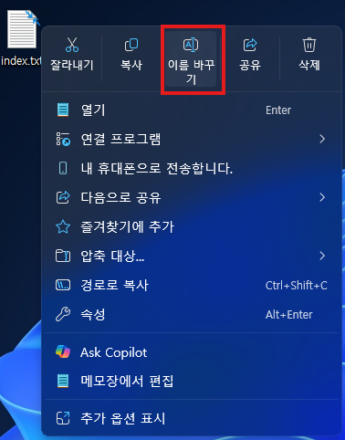
- 이름 전체가 선택된 상태로 편집 가능해집니다.
- 기존 이름을 모두 지우고
index.html이라고 입력합니다.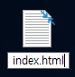
- Enter를 누릅니다.
- "확장명을 바꾸면 파일을 사용할 수 없게 될 수도 있습니다" 라는 경고창이 뜨면 예를 클릭합니다. 이건 정상입니다.
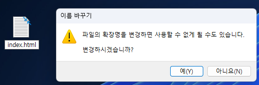
이름을 바꾼 후 파일 아이콘이 아래처럼 보이면 제대로 된 것입니다.
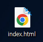
index.html로 입력하면 실제 파일 이름은 index.html.txt가 됩니다. 브라우저에서 열었을 때 코드가 그대로 글자로 보인다면 이 실수일 가능성이 높습니다. 파일 확장명을 반드시 먼저 켜 두세요.
④ 메모장으로 파일 열기
.html 파일은 더블클릭하면 브라우저로 열립니다. 코드를 직접 작성하거나 수정하려면 반드시 메모장(텍스트 편집기)으로 따로 열어야 합니다.
.txt 파일은 더블클릭하면 바로 메모장이 열리지만, .html 파일은 더블클릭하면 브라우저가 열립니다. 코드를 편집하려면 반드시 아래 방법으로 열어야 합니다.
index.html파일 위에서 마우스 오른쪽 버튼을 클릭합니다.- 메뉴에서 메모장에서 편집을 클릭합니다.
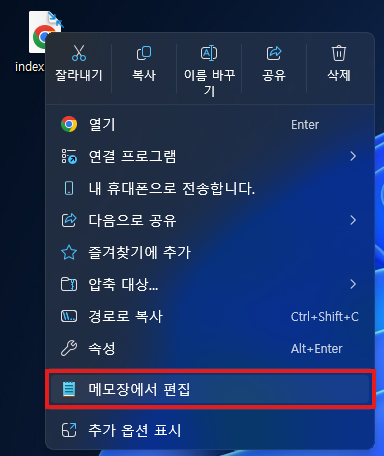
- 메모장이 열리고 내용이 비어 있으면 준비 완료입니다.
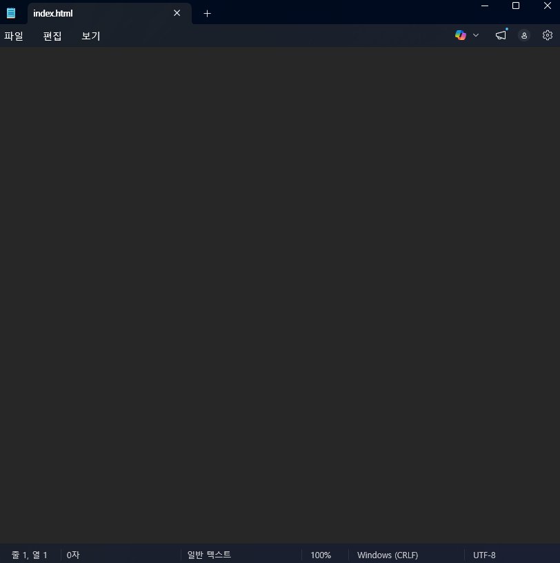
"항상 이 앱으로 열기"는 체크하지 않는 것이 좋습니다.
3.2 step 2. LLM으로 파일 작성하기
ChatGPT, Gemini, Claude 중 하나를 열고, 아래처럼 구체적으로 요청합니다.
예) "자기소개 페이지 만들어줘" → "이름, 관심사 3개, GitHub 링크를 넣은 자기소개 HTML 페이지를 전체 코드로 만들어줘"
프롬프트 예시 제시
HTML 파일 하나로 자기소개 페이지를 만들어줘.
초보자가 메모장에 그대로 붙여넣을 수 있게 전체 HTML 코드만 출력해줘.
포함할 내용:
- 이름: 홍길동
- 한 줄 소개: 사용자 경험과 AI 활용에 관심이 있는 학생
- 관심사 3개
- 개인 이력: 동아리 활동, 대회 출전, 공부 경험
- 스킬 또는 자격증
- Instagram, GitHub, 블로그 링크
디자인:
- 깔끔하고 읽기 쉬운 스타일
- 모바일에서도 크게 깨지지 않게
- CSS는 style 태그로 HTML 안에 같이 넣어줘프롬프트를 보낼 때는 아래 원칙을 기억하면 좋습니다.
- 무엇을 넣을지 항목으로 나눠서 적기
- 디자인 방향을 한두 줄로 같이 적기
- "전체 HTML 코드만 출력"처럼 출력 형식도 같이 지정하기
프롬프트 출력 결과 복사/붙여넣기
- 프롬프트를 보냅니다.
- 응답으로 나온 전체 HTML 코드를 복사합니다.
- 메모장으로 돌아가
Ctrl+A를 누른 뒤Ctrl+V로 전체 코드를 붙여넣습니다. Ctrl+S로 저장합니다.
복사할 때는 코드 일부만 복사하면 문서가 깨질 수 있으니, 시작부터 끝까지 전부 복사하는 습관이 중요합니다. 특히 <html>, <head>, <body>가 모두 들어 있는지 확인하면 좋습니다.
3.3 step 3. 브라우저 통한 결과물 확인하기
index.html파일을 더블클릭하거나 Chrome 창으로 끌어다 놓습니다.- 브라우저에 이름, 소개, 링크가 보이는지 확인합니다.
- 수정이 필요하면 메모장에서 내용을 바꾸고
Ctrl+S를 누른 뒤 Chrome에서Ctrl+R로 새로고침합니다.
이 단계에서는 "예쁘다 / 안 예쁘다"보다 먼저 기본 내용이 정상적으로 보이는지를 확인하는 것이 중요합니다.
- 이름이 제대로 보이는지
- 문장이 너무 잘리거나 겹치지 않는지
- 링크가 클릭 가능한지
- 배경색과 글자색이 너무 겹치지 않는지
3.4 step 4. LLM으로 파일 수정하기
첫 결과물이 마음에 들지 않으면, 지금 파일 내용을 그대로 보내고 수정 요구를 적으면 됩니다.
보통 첫 출력은 100점짜리가 아닙니다. 그래서 이 단계가 가장 중요합니다.
실제 완성도는 첫 생성보다 수정 요청을 얼마나 잘하느냐에서 갈립니다.
채팅에 파일 내용 복사하고 요구사항 전달
- 메모장에서
Ctrl+A를 눌러 전체 선택합니다. Ctrl+C를 눌러 현재 파일 전체를 복사합니다.- LLM 채팅창으로 돌아갑니다.
- 아래 수정 요청 예시를 적고, 그 아래에 현재 HTML 전체를
Ctrl+V로 붙여넣습니다.
이때는 "예쁘게 바꿔줘"처럼 막연한 표현보다, 무엇을 어떻게 바꾸고 싶은지를 짧게 나열하는 것이 훨씬 좋습니다.
- 배경색을 더 밝게
- 관심사 영역을 카드처럼 보이게
- 이름 글자를 더 크게
- 링크 버튼을 더 눈에 띄게
수정 과정 예시
아래 HTML을 수정해줘.
- 배경색을 더 밝게
- 이름 글자 더 크게
- 관심사 카드처럼 보이게
- 전체 코드 다시 출력해줘
[여기에 현재 index.html 전체 붙여넣기]- 수정된 전체 HTML 코드를 다시 복사합니다.
- 메모장으로 돌아와
Ctrl+A후Ctrl+V로 덮어씁니다. Ctrl+S로 저장하고 Chrome에서Ctrl+R로 다시 확인합니다.
이 과정을 2~3번 반복하면 페이지 품질이 꽤 좋아집니다. 수정은 한 번에 너무 많이 하기보다, 눈에 띄는 문제부터 하나씩 고치는 편이 안정적입니다.
3.5 step 5. 홈페이지 제출
추후 보충